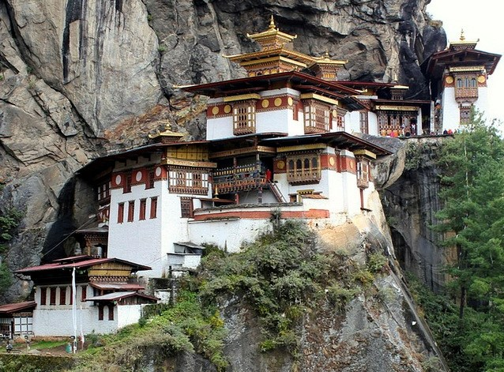
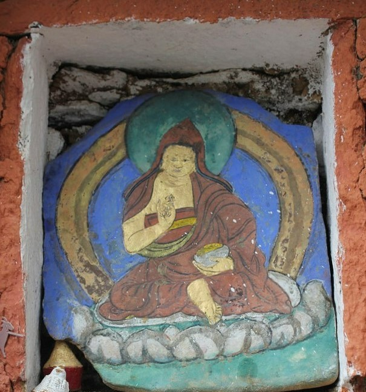

History
The Tiger's Nest, known as Paro Taktsang in it's native language, was built around Taktsang Senge Samdup cave. The temple complex hangs 3120 above sea level on the upper side of the Paro valley.
This where Buddhism was first introduced to people in Bhutan by an Indian Guru named Padmasambahva, during the 8th century CE. According to the legend, the Guru traveled to the cave on the back of a tigress, giving the cave its name - Taktsang meaning Tiger's Nest. It has been said that he meditated for 3 years, 3 months, 3 weeks, 3 days, and 3 hours.
Many Buddhist monks visited the cave over the years and Taktsang became a holy shrine. However, it did not have a monastery till the 17th century, when Ngawand Namgyal, the unifier of Bhutan as a nation, suggested the idea. This site almost completely burnt down in 1998 but was restored in 2005.
The Monastery & Cave
The location of Paro Taktsang is isolated from its surroundings as the only accessible route is mountainous paths. One of these paths is through a pine forest, decorated with prayer bannerettes for positive energy and protection against evil. The other two paths pass through a plateau named "A Hundred Thousand Fairies' Plateau."
The building complex consists of 4 main temples with various other dwellings. The buildings are white with golden roofs. All parts are connected through staircases carved into rock, and each building houses its own balcony. The main shrine has a wheel located at its center, which is rotated at the fourth hour of each day by monks to mark the new day.
There are wall paintings that decorate the interior walls. Gold is also seen in the interior of the complex as it plates the domes. Light enters through the building and illuminates idols inside. In the hall of Thousand Buddhas is a large rock statue of a tiger, a respected symbol - this is because the cave was chosen by the tigress in the legend.
The monastery has 8 caves. The cave where Guru Padmasmabhava is believed to have first entered on a tigress' back is called Tholu Phuk. And the cave where he saw out his meditation is known as Pel Phuk.